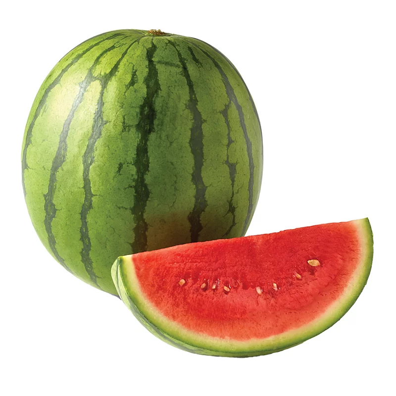

Some pictures of watermelons

Improves heart health
Helps you stay hydrated
Packed with nutrients and beneficial plant compounds

Has anticancer effects
Watermelons were domesticated in Egypt by 2000 BC, although they were not the sweet modern variety. Sweet dessert watermelons spread across the Mediterranean world during Roman times.
Improves heart health
Helps you stay hydrated
Packed with nutrients and beneficial plant compounds
Has anticancer effects
Watermelon (Citrullus lanatus) is a flowering plant species of the Cucurbitaceae family and the name of its edible fruit. A scrambling and trailing vine-like plant, it is a highly cultivated fruit worldwide, with more than 1,000 varieties.
Filled with vitamins and nutrients, they are packaged and ready to be delivered to your house!